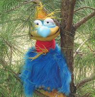
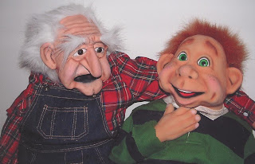

Jim Burke's "It's a Small, Small World"
7/18/2010
{kind=link}

“Show family affection to one another with brotherly love. Outdo one another in showing honor.” (Romans 12:11).
I was the only bird perched on the small tree’s limb and couldn’t help but overhear the conversation between Eddie Eastward and Clarence Clutterfield. They were sitting at a sheltered table in the patio area. Eddie tries to visit Clarence weekly.
“What’ve you been doing with yourself lately?” Clarence asked his young friend.
“I’ve been playing all types of games with my buddies,” Eddie answered.
“Like what?” Clarence wanted to know.
{kind=link}

“You know, games like ‘pin the tail on the monkey,’ and ‘musical stools,’” Eddie explained.
“Oh yeah, I know what you mean” Clarence grunted. “I play games like that all the time!”
“You’ve gotta be kidding,” Eddie answered. “I didn’t think that’s possible. Why, you’re in a…you’re in a…” Eddie was stumbling for the words.
“Home?” Clarence muttered. “Is that what you’re trying to say?”
“Well, uh, yeah, I guess that’s the word I’m looking for. And because, you’re uh, well uh, kinda..
“old?” Clarence interjected once again. “Are you trying to say that because I’m old and live in a veteran’s ‘facility’ that you don’t think I have fun?”
“Well, uh, I guess so, Clarence. We’ve known each other for a long time, and I know that some things do change. You ain’t exactly a spring chicken.”
“You don’t really think you youngsters have a corner on fun, do ya?” Clarence replied. He seemed to have a twinkle in his eye. “As a matter of fact, we play the same kind of games you do. They’ve just been readjusted for mature adults like me.”
“Really?” Eddie responded. He never really considered Clarence mature. Old, definitely. Mature, never.
“Yep. We play games like, ‘musical recliners,’ ‘spin the bottle of Mylanta,’ ‘red rover, red over, the nurse says bend over,’ ‘Doc, Doc, Goose,’ ‘sag, you’re it!’ and ‘pin the toupee on the bald guy,’” the old man said with a laugh.
“Hum, that’s quite inventive, Clarence,” Eddie had to admit.
“Hey, fellows, what’s up?” Jim had just entered the patio area.
“Well, we were just comparing notes on games we play,” Clarence explained.
“Yeah,” Eddie added. “I can’t wait to get old to play some of Clarence’s games. It must be a hoot where he’s at.” “And that’s a new revelation to you?” Jim smiled.
“I thought people got too old to have fun,” Eddie added sheepishly.
“Fun is a frame of mind. A person’s never too old for that,” Jim replied. ”The real problem erupts when some people play life games where others get hurt.”
“What d’ya mean?’ Clarence and Eddie asked at the same time.
“Some people play ‘King of the Hill,’ thinking that meeting their own needs is all that matters” Jim explained. “They push others away from their ‘hill.’ Other individuals play ‘Tug of War.’ They quickly choose up sides on any given issue and do everything they can to get people to come over to their side. And, some people even play ‘King Me’ ‘and desperately want others to affirm and acknowledge their accomplishments. The problem is, they can never accomplish enough and people resist ‘Kinging’ them.”
“Wow,” Eddie said.
“Gee Willikers” Clarence exclaimed. “Aren’t there some folks in the big World who play some edifying games?” he wanted to know.
“Yep.” Jim was happy to share. “Those who truly know Jesus love to play games like ‘give away’, as they think of new ways to share with others. They play “Who wants to be a Missionary?” as they ponder world needs. These followers also fill their days playing, ‘Whose serve is it?’” and the winner is the one who serves others the most.” With that, Jim had to go back inside (I think I know why, but I’m not telling).
There was a strange silence after Jim left. Eddie was the first to break the spell. “Hey, Clarence, how about playing a game of chess,” he offered. “You can be white if you want.” Clarence had never been given that choice before.
“You’re on!” Clarence replied.
As I flew off, I knew that something had definitely changed within me since their conversation began. As I glanced back at a game between two individuals of different generations, I sensed I was not alone.